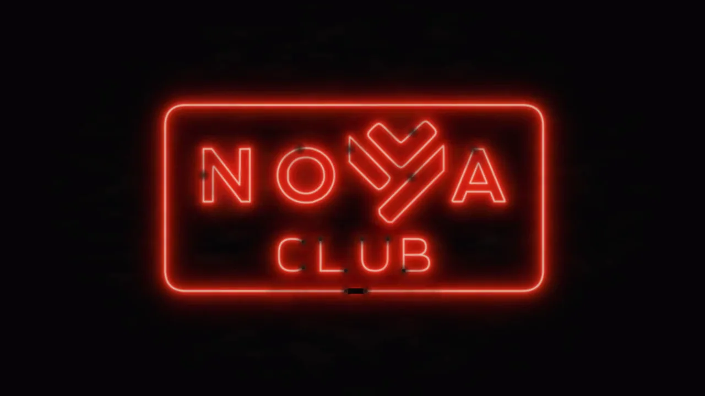
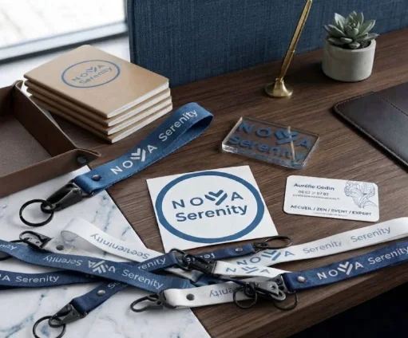

Notre histoire
Chaque grande aventure a ses premières pages. Les nôtres s'écrivent au fil des rencontres, des projets et des soirées partagées. Bienvenue dans les coulisses de NOVA Serenity.
À suivre…
-

Chapitre IV · Septembre 2026
Le NOVA Club ouvre ses portes
« Ici, pas de pitch, pas de badge à scanner. Juste des gens qui font le même métier… et qui prennent enfin le temps de se parler. »
Vingt ans de halls ouverts à 7 h et refermés à 20 h, de cafés partagés avec des property managers, des facility managers et des directeurs des services généraux. Vingt ans aux côtés de celles et ceux qui font vivre ces lieux : nos hôtesses, nos hôtes, nos concierges et nos managers.
Quand nous avons créé NOVA Serenity, c'était pour remettre l'humain au cœur de nos services. Il manquait un lieu pour se retrouver en dehors des contrats et des cahiers des charges. Le 1er octobre 2026, le NOVA Club a ouvert ses portes : petits-déjeuners conférences, dîners en petit comité, apéros… et surtout, des échanges vrais.
-
Chapitre III · Septembre 2026
Le Nova Store se dévoile
« Chaque instant est pensé pour la fluidité, la simplicité et la sérénité de vos équipes. »
Nous transformons vos attentes en actions simples au sein de vos immeubles : accueil, conciergerie, hospitalité.
En septembre, nous avons levé un coin du voile sur le Nova Store : cinq applications au service de vos collaborateurs, accessibles sans rien installer. Très prochainement…
-

Chapitre II · Mars 2026
Notre identité, à portée de main
« Il y a quelques mois, NOVA Serenity n'était qu'une idée. Aujourd'hui, le projet grandit. »
Carnets, porte-badges, présentoirs : les premiers kits NOVA Serenity sont arrivés. Chaque pièce a été pensée pour refléter ce qui nous anime au quotidien : un accueil soigné, chaleureux et professionnel, sur chacun des sites que nous accompagnons.
Car l'accueil, c'est la première image d'une entreprise, et chaque détail compte. Accueil, Zen, Event, Expert : une même exigence, votre sérénité.
-
Chapitre I · Novembre 2025
Le silence, puis la parole
« 5 mois d'ombre et de silence. La page est tournée. Maintenant, je parle. »
Avant NOVA Serenity, il y a eu cinq mois de silence. Le temps de tourner une page, de rassembler vingt ans d'expérience de l'accueil en entreprise et de dessiner une maison nouvelle.
Puis quelques mots ont suffi à faire naître l'attente : « Êtes-vous prêts ? Dans deux jours… tout sera révélé. »